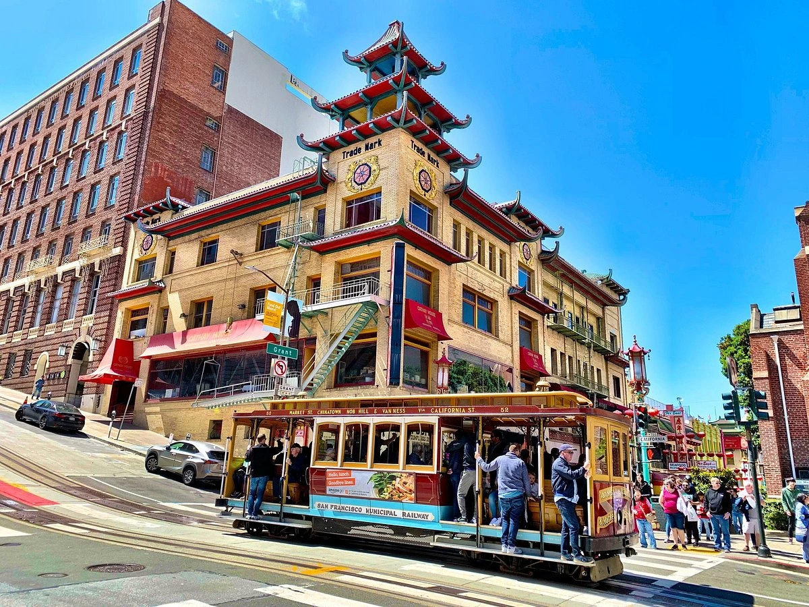
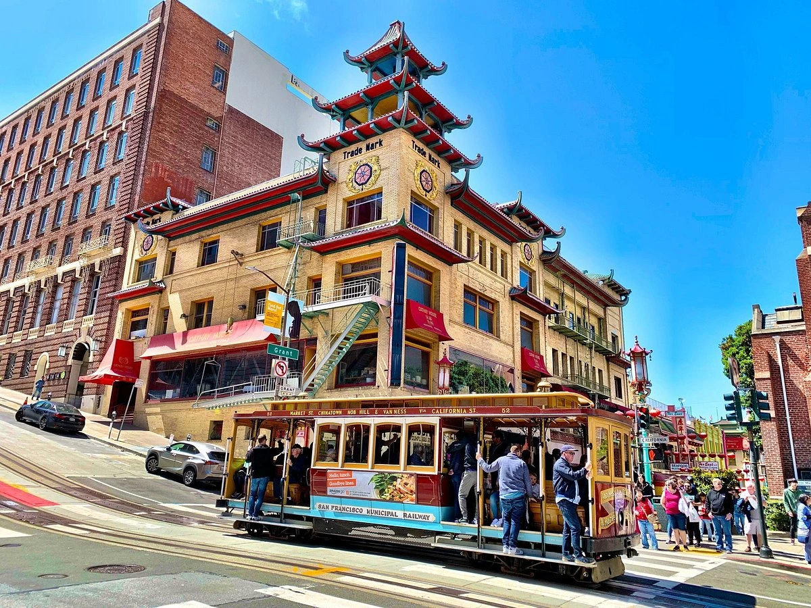
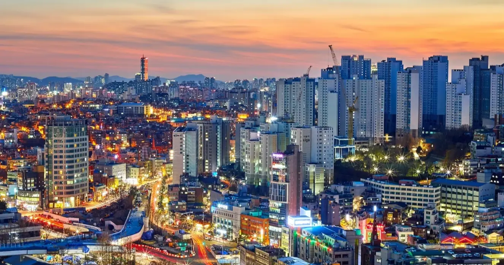
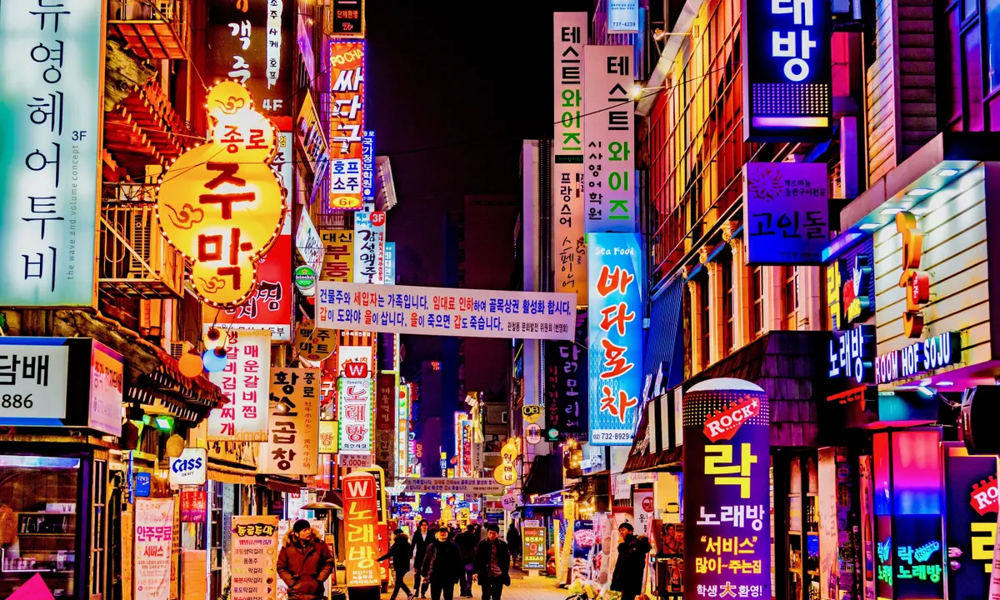
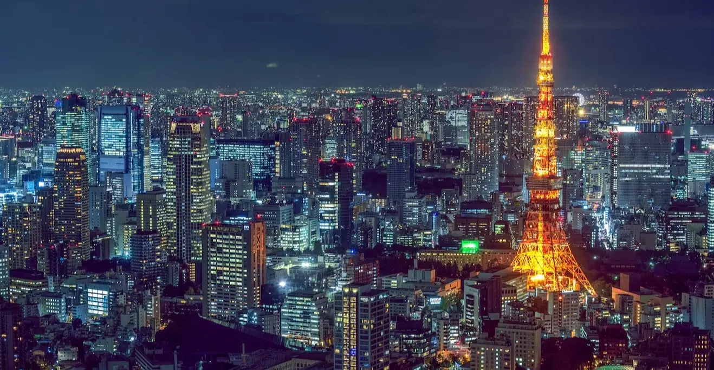
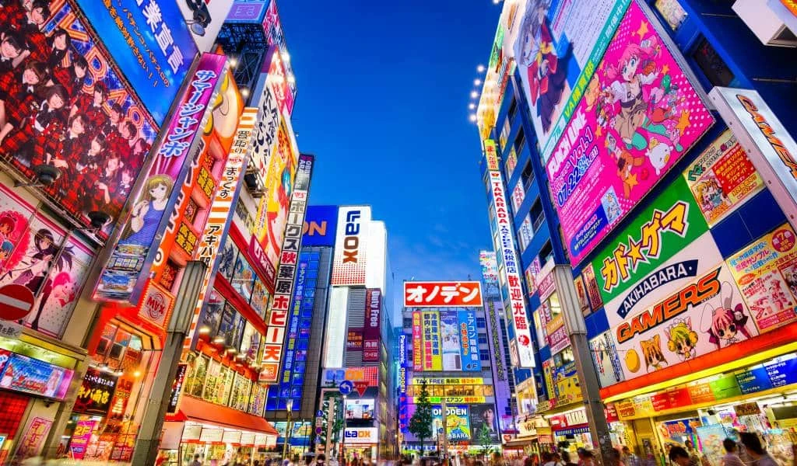

San Francisco, California
San Francisco, conocida como la "Ciudad de la Bahía", es un epicentro tecnológico situado en la costa oeste de los Estados Unidos. El icónico Golden Gate Bridge, que se alza majestuosamente sobre las aguas del océano Pacífico, simboliza la conexión entre el pasado y el presente tecnológico de la ciudad. Esta metrópolis es la puerta de entrada a Silicon Valley, donde las gigantes tecnológicas como Apple y Google dan forma al futuro.
.webp) 

Pero San Francisco es mucho más que tecnología; es una amalgama de culturas y creatividad. Sus barrios como Chinatown y Haight-Ashbury son testigos de esta diversidad, mientras que museos como el SFMOMA desafían los límites de la creatividad. La escena gastronómica fusiona alta cocina con la comida callejera de una manera única, deleitando a los paladares más exigentes.
Seoul, Corea del Sur

Seúl, la vibrante capital de Corea del Sur, es un destino que fusiona una rica herencia cultural con una innovación tecnológica puntera. Situada en el corazón de la península coreana, esta ciudad ofrece una experiencia única que abarca desde palacios ancestrales hasta rascacielos futuristas.
Pero Seúl es más que solo una joya histórica. Es una metrópolis tecnológica donde gigantes como Samsung y LG lideran la vanguardia de la electrónica y la innovación. En los barrios de Gangnam y Dongdaemun, encontrarás centros comerciales futuristas y mercados de electrónica que te sumergirán en el mundo tecnológico de Corea del Sur.
La comida coreana, con su variedad de sabores y platos únicos, es una experiencia culinaria que no te puedes perder. Desde bulgogi a kimchi, cada bocado es una explosión de sabores que refleja la rica tradición gastronómica del país.
La cultura pop coreana, conocida como "Hallyu", también tiene un gran impacto en Seúl. Puedes explorar la influencia de la música K-pop, el cine y los dramas coreanos en lugares como el distrito de entretenimiento de Gangnam y el Museo de Historia de la Cultura Popular Coreana.

Tokyo, Japón
Tokio, la capital de Japón, es una metrópolis de contrastes fascinantes donde lo tradicional y lo futurista se entrelazan de manera única. En el corazón de la nación del sol naciente, esta ciudad ofrece una experiencia de viaje que abarca desde antiguos templos hasta rascacielos vanguardistas.
Pero Tokio es mucho más que su historia. Es un epicentro tecnológico donde gigantes como Sony y Toyota lideran la revolución en electrónica y automoción. El distrito de Akihabara es un paraíso para los amantes de la tecnología y la electrónica, con tiendas que ofrecen los últimos gadgets y videojuegos.


La gastronomía japonesa es otro aspecto destacado de Tokio, donde sushi, ramen, y tempura se sirven con maestría. La ciudad alberga una variedad de experiencias culinarias, desde puestos callejeros hasta restaurantes de alta cocina con estrellas Michelin.
La cultura pop japonesa, desde el manga y el anime hasta la música J-pop, es una parte integral de la vida en Tokio. En el distrito de Harajuku, puedes encontrar tiendas temáticas únicas y cafés inspirados en tus personajes favoritos.